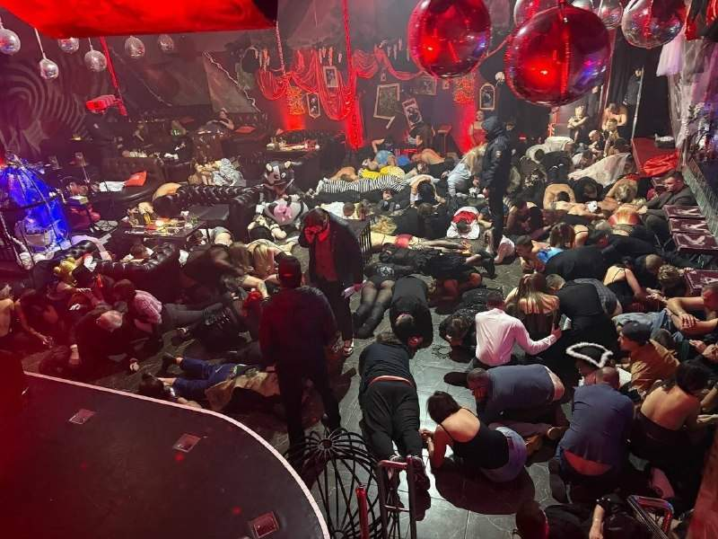
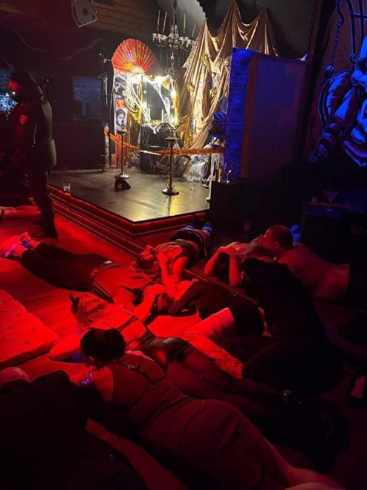
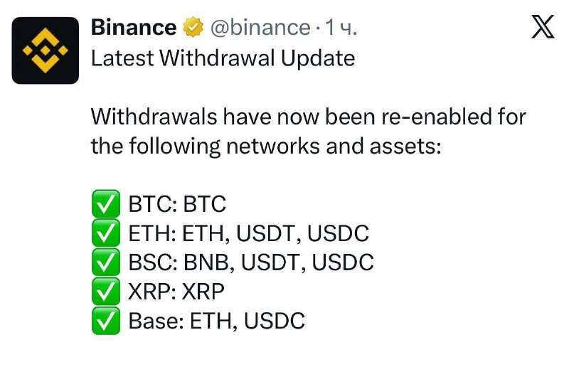
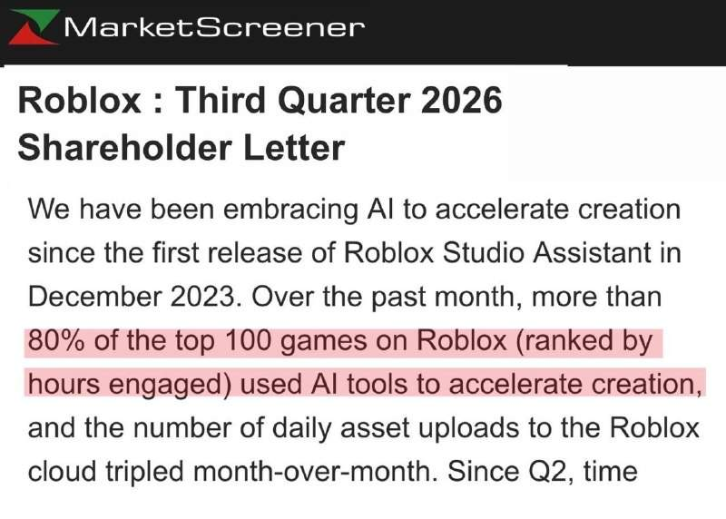
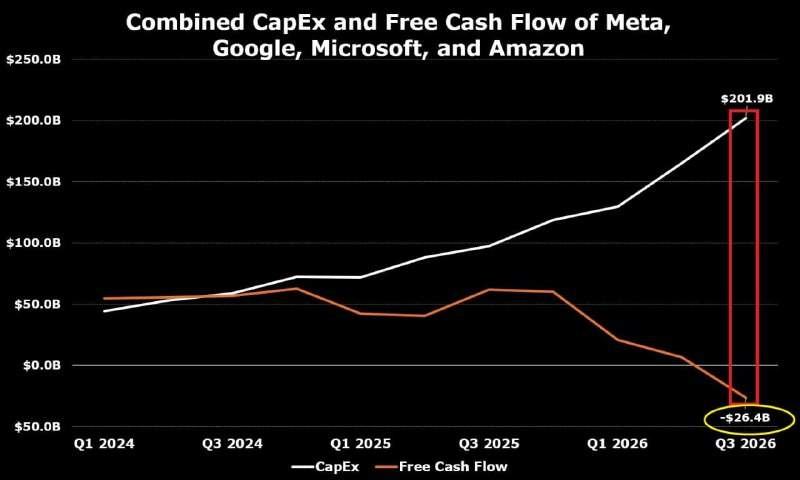
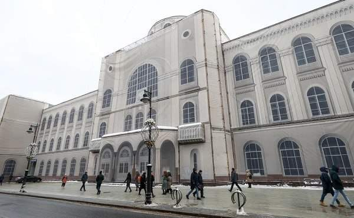

Ограбление Binance, ставшее крупнейшим в современной истории, совершили хакеры из Северной Кореи — официальное заявление ФБР. Северокорейцы похитили более $6 млрд. Это почти 25% от ВВП Северной Кореи. @bankrollo
Ограбление Binance, ставшее крупнейшим в современной истории, совершили хакеры из Северной Кореи — официальное заявление ФБР. Северокорейцы похитили более $6 млрд. Это почти 25% от ВВП Северной Кореи. @bankrollo
В Черногории начал действовать визовый режим для россиян. Теперь, чтобы оформить въездные документы, туристам потребуется заплатить консульский сбор в размере €35 за взрослого заявителя и €17,5 для детей, не достигших 14 лет. @bankrollo


Хэллоуин в Москве закончился рейдом силовиков в клубе Bizarre. Около 200 гостей в костюмах положили на пол и начали проверять документы. Поводом стала проверка на ЛГБТ*-пропаганду — организаторы готовили для посетителей практики с прикосновениями и исследованием чувственности. Это уже третий рейд в клубе: ранее силовики приходили туда в декабре 2024-го и мае 2025 года. @bankrollo * Движение ЛГБТ признано экстремистским и запрещено в РФ.
Ограбление Binance, ставшее крупнейшим в современной истории, совершили хакеры из Северной Кореи — официальное заявление ФБР. Северокорейцы похитили более $6 млрд. Это почти 25% от ВВП Северной Кореи. @bankrollo https://t.me/bankrollo/69341 Трамп усомнился в выводах ФБР о том, что за взломом криптобиржи Binance стоят хакеры из Северной Кореи. «Мы сейчас выясняем это. Мы не знаем, связано ли это с Северной Кореей, но если это так, то мы обсудим этот вопрос с Северной Кореей»,— сказал президент США. Трамп ранее неоднократно называл лидера КНДР Ким Чен Ына своим другом. @bankrollo
Меньше месяца осталось до того, чтобы заплатить транспортный и земельный налоги и налог на имущество за прошлый год. Со 2 декабря начнут капать пени. @bankrollo
Инженеры Volga начали закрашивать логотипы Geely на авто, выяснили механики. Теперь инженеры не просто меняют шильдики, но и маскируют логотипы Geely на комплектующих. @bankrollo https://t.me/bankrollo/69322 Новая Volga может появиться в президентском гараже, заявил Песков. Он напомнил, что Путин сам протестировал автомобиль и он ему понравился. @bankrollo
Путин ответит Зеленскому, если он ему позвонит, заявили в Кремле. Президент РФ никогда не отказывался от переговоров, отметил помощник российского лидера Юрий Ушаков. @bankrollo
У российских криптанов смогут забрать всю крипту за долги. Судебные приставы уже получили право обращать взыскание на цифровые активы должников. Для этого приставам достаточно направить постановление цифровому депозитарию, который спишет криптовалюту. По данным ФССП, в работе уже находятся 13 дел о конфискации цифровых активов. @bankrollo

Binance снова заработала после взлома. Компания восстановила потерянные $6,3 млрд. @bankrollo
В Краснодаре устроили рейды против детей в костюмах на Хэллоуин. Полиция патрулирует места скопления зумеров и проверяет всех в маскарадных нарядах и гриме. В полиции рейды назвали «профилактической беседой ради безопасности ребят». При этом на видео некоторых… https://t.me/bankrollo/69339 Краснодар превратился в столицу Хэллоуина в России несмотря на рейды силовиков. Сотни людей вышли в костюмах в центр города. Местные говорят, что этот Хэллоуин стал самым масштабным за всю историю города. @bankrollo
В Китае власти усилят контроль за имуществом, бизнесом и расходами чиновников и их родственников. Также Коммунистическая партия Китая призвала ужесточить борьбу с коррупцией, связанной с криптовалютами. Речь идет об усиленных проверках кадров, начиная с высшего руководящего звена. Кроме того, китайские власти намерены усилить воспитание верности партии. @bankrollo

Школьники становятся миллионерами благодаря Roblox. Там они создают игры и монетезируют их. Топ-1000 разработчиков уже зарабатывают по $1,3 млн в год, говорится в отчёте компании. С ИИ юзеры создали 80% самых популярных игр: от выращивания садов до АСМР-паркуров. Так, 19-летний парень получает $400 тысяч в месяц за виртуальную рыбалку, а 8-летний школьник уже зарабатывает на игре про волков. @bankrollo
При проверке информации США о подготовке теракта в Москве задержан подросток — ФСБ. Информацию о теракте он опубликовал в ролике в TikTok. @bankrollo

ИИ-пузырь в США лопнул. После вчерашних отчётов весь американский бигтех летит вниз. После сильного отчёта Intel обвалился на 30% за день, так сильно акции не падали даже во время краха доткомов. Google за сутки потерял около $500 млрд. Инвесторы больше не… https://t.me/bankrollo/69261 Американские бигтех-компании впервые в современной истории ушли в минус по свободным деньгам. Это значит, что сейчас бигтех тратит всю выручку и даже использует свои финансовые запасы, чтобы оплатить дата-центры и чипы для ИИ. Так, для Google это первый дефицитный квартал впервые за 22 года. Аналитики крупнейших банков ждут, что траты на ИИ могут вырасти ещё в 5 раз к концу 2027 года. @bankrollo
Между Москвой и Баку запустят люксовый круизный лайнер. До столицы Азербайджана корабль дойдёт за 7 дней по Москве-реке, Оке, Волге и Каспийскому морю. Один корабль уже готов, ещё два на подходе, рассказали в Минпромторге. @bankrollo
ФСБ опубликовала кадры задержания школьника, подозреваемого в подготовке теракта в Царицыно. @bankrollo
Binance взломали, потому что инженер команды встречался со шпионкой из КНДР. Парень оставил ноутбук девушке без присмотра в день атаки, пишет криптоаналитик ZachXBT. @bankrollo

Почта России выставила на продажу своё главное здание — Главпочтамт в центре Москвы. За него хотят получить 7,7 млрд рублей. За 2025 год убытки Почта России превысили 23 млрд рублей. @bankrollo
Во Флориде частный самолёт рухнул прямо на дорогу на скорости 540 км/ч. На борту было 9 человек. @bankrollo